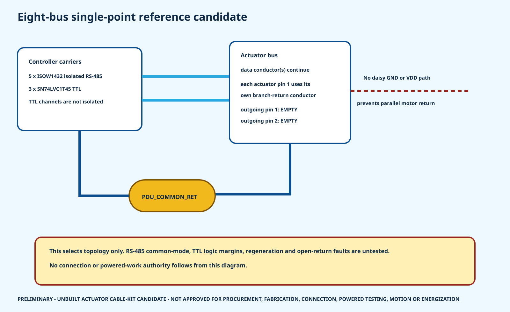

25 / 25
axis power pairs have fixed-transition plus restrained-pigtail candidates
HR-30 whole-body P0.1
CF130 is the moving-cable candidate to a panel-mounted Molex Micro-Fit 3.0 pair; a restrained Alpha Wire 3051 pigtail continues to JST EH. Direct CF130-to-JST crimping is rejected.
axis power pairs have fixed-transition plus restrained-pigtail candidates
controlled actuator connector-cavity records
outgoing GND/VDD cavities required empty
released cables, crimp processes, protection devices or powered permissions

ROBOTIS uses EHR-03/EHR-04 notation. JST's current canonical housing models are EHR-3 and EHR-4, with standard contact SEH-001T-P0.6. Low-insertion-force contacts are rejected for this walking-vibration candidate because JST identifies reduced vibration resistance.
The order-code family is now explicit, but received mating fit, tooling, crimp quality and retention are still unverified.
Do not crimp or connect either candidate yet. igus publishes 0.34 mm² nominal conductors; JST publishes a 0.33 mm² maximum for the standard EH contact. The 0.01 mm² mismatch requires written supplier approval or a different cable/contact choice plus coupon tests.
igus CF130.03.02.UL terminates in Molex 430250200 with two 430300001 female terminals.
Molex 430200200 with two 430310001 male terminals mounts in the dimensioned bracket candidate. All 25 nominal placements are bound to the whole-body CAD.
Two restrained Alpha Wire 3051 conductors continue to the JST EH power cavities. The pigtail must not flex with the joint.
The bracket and connector families are candidates, not released parts. Official cutout geometry, received fit, production material/fasteners, clamp force, pigtail lengths, tolerance-aware integration, crimp tooling, pull strength, temperature rise and cycle testing remain open.

RS-485 buses use isolated ISOW1432 controller/field domains.
TTL buses are translated but not galvanically isolated.
largest opposite-sign pair offset in the rejected-CF9 planning screen; not an interface-margin release.
Each actuator pin 1 returns to PDU_COMMON_RET through its own branch conductor. Inter-actuator pin 1 and pin 2 cavities stay empty, so the data harness cannot become a parallel motor-current return. This is a proposed physical topology only: all eight bus-reference tests remain unexecuted.
| Axis | Bus | Candidate cap | Published stall endpoint | Round-trip planning length | Wire/contact disposition |
|---|---|---|---|---|---|
| WAIST_YAW | RS-WAIST | 2.499010 A | 4.400 A | 149.231 mm | ALPHA 3051 TO JST/MICRO-FIT SIZE TABLES PASS AT PUBLISHED AWG22 / 1.575 MM OD; CF130 TO MICRO-FIT AWG22 PASS BUT 1.85 MM CORE-OD LIMIT REMAINS UNVERIFIED |
| HEAD_PAN | TTL-HEAD | 0.700000 A | 0.880 A | 148.650 mm | ALPHA 3051 TO JST/MICRO-FIT SIZE TABLES PASS AT PUBLISHED AWG22 / 1.575 MM OD; CF130 TO MICRO-FIT AWG22 PASS BUT 1.85 MM CORE-OD LIMIT REMAINS UNVERIFIED |
| HEAD_TILT | TTL-HEAD | 0.700000 A | 0.880 A | 284.650 mm | ALPHA 3051 TO JST/MICRO-FIT SIZE TABLES PASS AT PUBLISHED AWG22 / 1.575 MM OD; CF130 TO MICRO-FIT AWG22 PASS BUT 1.85 MM CORE-OD LIMIT REMAINS UNVERIFIED |
| L_SHOULDER_PITCH | RS-LARM | 1.998670 A | 2.300 A | 229.447 mm | ALPHA 3051 TO JST/MICRO-FIT SIZE TABLES PASS AT PUBLISHED AWG22 / 1.575 MM OD; CF130 TO MICRO-FIT AWG22 PASS BUT 1.85 MM CORE-OD LIMIT REMAINS UNVERIFIED |
| L_SHOULDER_ROLL | RS-LARM | 1.998670 A | 2.300 A | 285.447 mm | ALPHA 3051 TO JST/MICRO-FIT SIZE TABLES PASS AT PUBLISHED AWG22 / 1.575 MM OD; CF130 TO MICRO-FIT AWG22 PASS BUT 1.85 MM CORE-OD LIMIT REMAINS UNVERIFIED |
| L_ELBOW_PITCH | RS-LARM | 1.998670 A | 2.300 A | 641.447 mm | ALPHA 3051 TO JST/MICRO-FIT SIZE TABLES PASS AT PUBLISHED AWG22 / 1.575 MM OD; CF130 TO MICRO-FIT AWG22 PASS BUT 1.85 MM CORE-OD LIMIT REMAINS UNVERIFIED |
| L_WRIST_ROTATION | TTL-LDIST | 0.700000 A | 0.880 A | 981.344 mm | ALPHA 3051 TO JST/MICRO-FIT SIZE TABLES PASS AT PUBLISHED AWG22 / 1.575 MM OD; CF130 TO MICRO-FIT AWG22 PASS BUT 1.85 MM CORE-OD LIMIT REMAINS UNVERIFIED |
| L_GRIPPER | TTL-LDIST | 0.700000 A | 0.880 A | 1123.344 mm | ALPHA 3051 TO JST/MICRO-FIT SIZE TABLES PASS AT PUBLISHED AWG22 / 1.575 MM OD; CF130 TO MICRO-FIT AWG22 PASS BUT 1.85 MM CORE-OD LIMIT REMAINS UNVERIFIED |
| L_HIP_YAW | RS-LLEG | 2.499010 A | 4.900 A | 291.091 mm | ALPHA 3051 TO JST/MICRO-FIT SIZE TABLES PASS AT PUBLISHED AWG22 / 1.575 MM OD; CF130 TO MICRO-FIT AWG22 PASS BUT 1.85 MM CORE-OD LIMIT REMAINS UNVERIFIED |
| L_HIP_ROLL | RS-LLEG | 2.499010 A | 4.900 A | 387.091 mm | ALPHA 3051 TO JST/MICRO-FIT SIZE TABLES PASS AT PUBLISHED AWG22 / 1.575 MM OD; CF130 TO MICRO-FIT AWG22 PASS BUT 1.85 MM CORE-OD LIMIT REMAINS UNVERIFIED |
| L_HIP_PITCH | RS-LLEG | 2.499010 A | 4.900 A | 483.091 mm | ALPHA 3051 TO JST/MICRO-FIT SIZE TABLES PASS AT PUBLISHED AWG22 / 1.575 MM OD; CF130 TO MICRO-FIT AWG22 PASS BUT 1.85 MM CORE-OD LIMIT REMAINS UNVERIFIED |
| L_KNEE_PITCH | RS-LLEG | 2.499010 A | 4.900 A | 859.091 mm | ALPHA 3051 TO JST/MICRO-FIT SIZE TABLES PASS AT PUBLISHED AWG22 / 1.575 MM OD; CF130 TO MICRO-FIT AWG22 PASS BUT 1.85 MM CORE-OD LIMIT REMAINS UNVERIFIED |
| L_ANKLE_PITCH | RS-LLEG | 1.998670 A | 2.300 A | 1225.091 mm | ALPHA 3051 TO JST/MICRO-FIT SIZE TABLES PASS AT PUBLISHED AWG22 / 1.575 MM OD; CF130 TO MICRO-FIT AWG22 PASS BUT 1.85 MM CORE-OD LIMIT REMAINS UNVERIFIED |
| L_ANKLE_ROLL | RS-LLEG | 1.998670 A | 2.300 A | 1321.091 mm | ALPHA 3051 TO JST/MICRO-FIT SIZE TABLES PASS AT PUBLISHED AWG22 / 1.575 MM OD; CF130 TO MICRO-FIT AWG22 PASS BUT 1.85 MM CORE-OD LIMIT REMAINS UNVERIFIED |
| R_SHOULDER_PITCH | RS-RARM | 1.998670 A | 2.300 A | 229.447 mm | ALPHA 3051 TO JST/MICRO-FIT SIZE TABLES PASS AT PUBLISHED AWG22 / 1.575 MM OD; CF130 TO MICRO-FIT AWG22 PASS BUT 1.85 MM CORE-OD LIMIT REMAINS UNVERIFIED |
| R_SHOULDER_ROLL | RS-RARM | 1.998670 A | 2.300 A | 285.447 mm | ALPHA 3051 TO JST/MICRO-FIT SIZE TABLES PASS AT PUBLISHED AWG22 / 1.575 MM OD; CF130 TO MICRO-FIT AWG22 PASS BUT 1.85 MM CORE-OD LIMIT REMAINS UNVERIFIED |
| R_ELBOW_PITCH | RS-RARM | 1.998670 A | 2.300 A | 641.447 mm | ALPHA 3051 TO JST/MICRO-FIT SIZE TABLES PASS AT PUBLISHED AWG22 / 1.575 MM OD; CF130 TO MICRO-FIT AWG22 PASS BUT 1.85 MM CORE-OD LIMIT REMAINS UNVERIFIED |
| R_WRIST_ROTATION | TTL-RDIST | 0.700000 A | 0.880 A | 981.344 mm | ALPHA 3051 TO JST/MICRO-FIT SIZE TABLES PASS AT PUBLISHED AWG22 / 1.575 MM OD; CF130 TO MICRO-FIT AWG22 PASS BUT 1.85 MM CORE-OD LIMIT REMAINS UNVERIFIED |
| R_GRIPPER | TTL-RDIST | 0.700000 A | 0.880 A | 1123.344 mm | ALPHA 3051 TO JST/MICRO-FIT SIZE TABLES PASS AT PUBLISHED AWG22 / 1.575 MM OD; CF130 TO MICRO-FIT AWG22 PASS BUT 1.85 MM CORE-OD LIMIT REMAINS UNVERIFIED |
| R_HIP_YAW | RS-RLEG | 2.499010 A | 4.900 A | 291.091 mm | ALPHA 3051 TO JST/MICRO-FIT SIZE TABLES PASS AT PUBLISHED AWG22 / 1.575 MM OD; CF130 TO MICRO-FIT AWG22 PASS BUT 1.85 MM CORE-OD LIMIT REMAINS UNVERIFIED |
| R_HIP_ROLL | RS-RLEG | 2.499010 A | 4.900 A | 387.091 mm | ALPHA 3051 TO JST/MICRO-FIT SIZE TABLES PASS AT PUBLISHED AWG22 / 1.575 MM OD; CF130 TO MICRO-FIT AWG22 PASS BUT 1.85 MM CORE-OD LIMIT REMAINS UNVERIFIED |
| R_HIP_PITCH | RS-RLEG | 2.499010 A | 4.900 A | 483.091 mm | ALPHA 3051 TO JST/MICRO-FIT SIZE TABLES PASS AT PUBLISHED AWG22 / 1.575 MM OD; CF130 TO MICRO-FIT AWG22 PASS BUT 1.85 MM CORE-OD LIMIT REMAINS UNVERIFIED |
| R_KNEE_PITCH | RS-RLEG | 2.499010 A | 4.900 A | 859.091 mm | ALPHA 3051 TO JST/MICRO-FIT SIZE TABLES PASS AT PUBLISHED AWG22 / 1.575 MM OD; CF130 TO MICRO-FIT AWG22 PASS BUT 1.85 MM CORE-OD LIMIT REMAINS UNVERIFIED |
| R_ANKLE_PITCH | RS-RLEG | 1.998670 A | 2.300 A | 1225.091 mm | ALPHA 3051 TO JST/MICRO-FIT SIZE TABLES PASS AT PUBLISHED AWG22 / 1.575 MM OD; CF130 TO MICRO-FIT AWG22 PASS BUT 1.85 MM CORE-OD LIMIT REMAINS UNVERIFIED |
| R_ANKLE_ROLL | RS-RLEG | 1.998670 A | 2.300 A | 1321.091 mm | ALPHA 3051 TO JST/MICRO-FIT SIZE TABLES PASS AT PUBLISHED AWG22 / 1.575 MM OD; CF130 TO MICRO-FIT AWG22 PASS BUT 1.85 MM CORE-OD LIMIT REMAINS UNVERIFIED |
Connector family · 25 axis candidates · 159 cavity records · Data candidates · Inspection/test plan · Open holds · Primary sources
All measured values remain NONE and every execution state remains NOT EXECUTED.